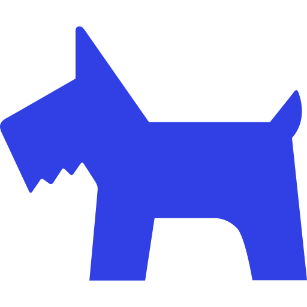
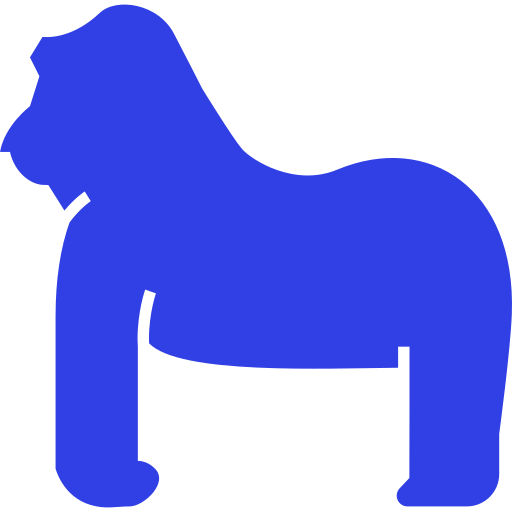
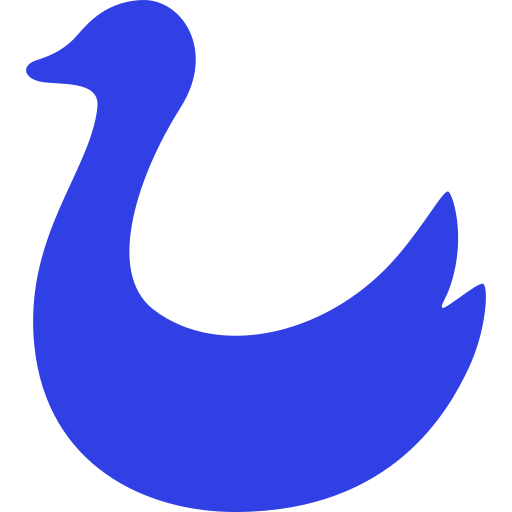

Animals that like millet dumplings
きび団子を好む動物たちの例
桃 Peach
桃がきび団子を好む理由は、自然な果糖と栄養、甘さと酸味の絶妙なバランス、 果肉の食感、趣旨からの栄養吸収などが挙げられます。

犬 Dog
犬はきび団子好む理由は、自然な食材の味と栄養、歯ごたえ、本能的な 欲求の満足、飼い主との絆の強化があげられます。

猿 Monkey
猿がきび団子を好む理由は自然な食材の多様性や風味、持ち運びやすさ、 群れとの社交的な食事体験による絆の強化もあげられます。

雉 Pheasant
雉がきび団子を好む理由は、豊富なタンパク質とエネルギー源、菜食の適応、 羽ばたきや歩行によるエクササイズと健康維持があげられます。